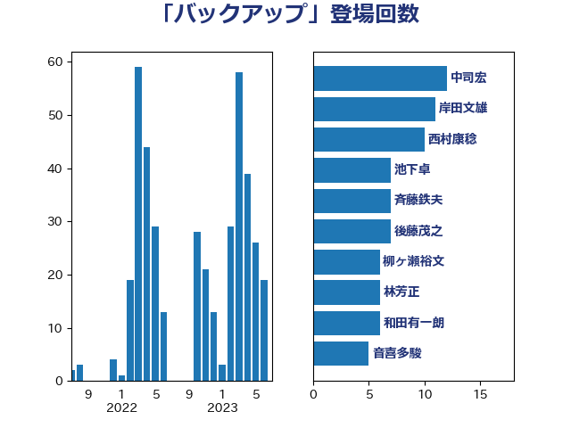

単語「バックアップ」

| 中司宏 | 日本維新の会 | 12 回 |
| 岸田文雄 | 自由民主党 | 11 回 |
| 西村康稔 | 自由民主党 | 10 回 |
| 池下卓 | 日本維新の会 | 7 回 |
| 斉藤鉄夫 | 公明党 | 7 回 |
| 後藤茂之 | 自由民主党 | 7 回 |
| 柳ヶ瀬裕文 | 日本維新の会 | 6 回 |
| 林芳正 | 自由民主党 | 6 回 |
| 和田有一朗 | 日本維新の会 | 6 回 |
| 音喜多駿 | 日本維新の会 | 5 回 |
| 河野太郎 | 自由民主党 | 5 回 |
| 川崎ひでと | 自由民主党 | 5 回 |
| 西岡秀子 | 国民民主党 | 4 回 |
| 衛藤晟一 | 自由民主党 | 4 回 |
| 芳賀道也 | 国民民主党 | 4 回 |
| 篠原孝 | 立憲民主党 | 4 回 |
| 岡田直樹 | 自由民主党 | 4 回 |
| 山崎誠 | 立憲民主党 | 4 回 |
| 奥下剛光 | 日本維新の会 | 4 回 |
| 金村龍那 | 日本維新の会 | 3 回 |
| 葉梨康弘 | 自由民主党 | 3 回 |
| 落合貴之 | 立憲民主党 | 3 回 |
| 空本誠喜 | 日本維新の会 | 3 回 |
| 福島伸享 | 無所属 | 3 回 |
| 白石洋一 | 立憲民主党 | 3 回 |
| 梅谷守 | 立憲民主党 | 3 回 |
| 庄子賢一 | 公明党 | 3 回 |
| 小野泰輔 | 日本維新の会 | 3 回 |
| 宮本岳志 | 日本共産党 | 3 回 |
| 務台俊介 | 自由民主党 | 3 回 |
| 加藤勝信 | 自由民主党 | 3 回 |
| 仁木博文 | 無所属 | 3 回 |
| 三浦信祐 | 公明党 | 3 回 |
| 高橋千鶴子 | 日本共産党 | 2 回 |
| 高市早苗 | 自由民主党 | 2 回 |
| 須藤元気 | 無所属 | 2 回 |
| 青柳仁士 | 日本維新の会 | 2 回 |
| 青山大人 | 立憲民主党 | 2 回 |
| 階猛 | 立憲民主党 | 2 回 |
| 阿部司 | 日本維新の会 | 2 回 |
| 阿達雅志 | 自由民主党 | 2 回 |
| 野田国義 | 立憲民主党 | 2 回 |
| 西田実仁 | 公明党 | 2 回 |
| 笠浩史 | 無所属 | 2 回 |
| 笠井亮 | 日本共産党 | 2 回 |
| 田中健 | 国民民主党 | 2 回 |
| 滝波宏文 | 自由民主党 | 2 回 |
| 浅田均 | 日本維新の会 | 2 回 |
| 横沢高徳 | 立憲民主党 | 2 回 |
| 森田俊和 | 立憲民主党 | 2 回 |
| 森本真治 | 立憲民主党 | 2 回 |
| 森山浩行 | 立憲民主党 | 2 回 |
| 梅村みずほ | 日本維新の会 | 2 回 |
| 松本尚 | 自由民主党 | 2 回 |
| 松本剛明 | 自由民主党 | 2 回 |
| 松川るい | 自由民主党 | 2 回 |
| 本田顕子 | 自由民主党 | 2 回 |
| 新藤義孝 | 自由民主党 | 2 回 |
| 川田龍平 | 立憲民主党 | 2 回 |
| 岸真紀子 | 立憲民主党 | 2 回 |
| 岩本剛人 | 自由民主党 | 2 回 |
| 岡本あき子 | 立憲民主党 | 2 回 |
| 尾崎正直 | 自由民主党 | 2 回 |
| 小林鷹之 | 自由民主党 | 2 回 |
| 天畠大輔 | れいわ新選組 | 2 回 |
| 古川元久 | 国民民主党 | 2 回 |
| 友納理緒 | 自由民主党 | 2 回 |
| 加田裕之 | 自由民主党 | 2 回 |
| 佐藤英道 | 公明党 | 2 回 |
| 伊東信久 | 日本維新の会 | 2 回 |
| 中曽根康隆 | 自由民主党 | 2 回 |
| 中川正春 | 立憲民主党 | 2 回 |
| 高橋克法 | 自由民主党 | 1 回 |
| 高木真理 | 立憲民主党 | 1 回 |
| 高木かおり | 日本維新の会 | 1 回 |
| 長峯誠 | 自由民主党 | 1 回 |
| 長友慎治 | 国民民主党 | 1 回 |
| 鈴木敦 | 国民民主党 | 1 回 |
| 金子恭之 | 自由民主党 | 1 回 |
| 野田聖子 | 自由民主党 | 1 回 |
| 近藤昭一 | 立憲民主党 | 1 回 |
| 輿水恵一 | 公明党 | 1 回 |
| 足立康史 | 日本維新の会 | 1 回 |
| 谷合正明 | 公明党 | 1 回 |
| 蓮舫 | 立憲民主党 | 1 回 |
| 菊田真紀子 | 立憲民主党 | 1 回 |
| 菅家一郎 | 自由民主党 | 1 回 |
| 荒井優 | 立憲民主党 | 1 回 |
| 竹詰仁 | 国民民主党 | 1 回 |
| 竹内譲 | 公明党 | 1 回 |
| 竹内真二 | 公明党 | 1 回 |
| 稲富修二 | 立憲民主党 | 1 回 |
| 福重隆浩 | 公明党 | 1 回 |
| 神谷裕 | 立憲民主党 | 1 回 |
| 神谷宗幣 | 参政党 | 1 回 |
| 礒崎哲史 | 国民民主党 | 1 回 |
| 石垣のりこ | 立憲民主党 | 1 回 |
| 石原宏高 | 自由民主党 | 1 回 |
| 石井啓一 | 公明党 | 1 回 |
| 田中昌史 | 自由民主党 | 1 回 |
| 牧山ひろえ | 立憲民主党 | 1 回 |
| 熊谷裕人 | 立憲民主党 | 1 回 |
| 湯原俊二 | 立憲民主党 | 1 回 |
| 渡辺猛之 | 自由民主党 | 1 回 |
| 渡辺博道 | 自由民主党 | 1 回 |
| 渡辺創 | 立憲民主党 | 1 回 |
| 清水貴之 | 日本維新の会 | 1 回 |
| 浅川義治 | 日本維新の会 | 1 回 |
| 櫻井周 | 立憲民主党 | 1 回 |
| 榛葉賀津也 | 国民民主党 | 1 回 |
| 森屋隆 | 立憲民主党 | 1 回 |
| 柴田巧 | 日本維新の会 | 1 回 |
| 松原仁 | 立憲民主党 | 1 回 |
| 本庄知史 | 立憲民主党 | 1 回 |
| 星北斗 | 自由民主党 | 1 回 |
| 斎藤アレックス | 国民民主党 | 1 回 |
| 掘井健智 | 日本維新の会 | 1 回 |
| 平沼正二郎 | 自由民主党 | 1 回 |
| 島村大 | 自由民主党 | 1 回 |
| 山本太郎 | れいわ新選組 | 1 回 |
| 山口那津男 | 公明党 | 1 回 |
| 山口晋 | 自由民主党 | 1 回 |
| 山下雄平 | 自由民主党 | 1 回 |
| 小泉龍司 | 自由民主党 | 1 回 |
| 小倉將信 | 自由民主党 | 1 回 |
| 寺田静 | 無所属 | 1 回 |
| 宮路拓馬 | 自由民主党 | 1 回 |
| 宮本徹 | 日本共産党 | 1 回 |
| 宗清皇一 | 自由民主党 | 1 回 |
| 塩田博昭 | 公明党 | 1 回 |
| 堂故茂 | 自由民主党 | 1 回 |
| 土田慎 | 自由民主党 | 1 回 |
| 吉田統彦 | 立憲民主党 | 1 回 |
| 吉田宣弘 | 公明党 | 1 回 |
| 吉田とも代 | 日本維新の会 | 1 回 |
| 古賀之士 | 立憲民主党 | 1 回 |
| 北村経夫 | 自由民主党 | 1 回 |
| 加藤鮎子 | 自由民主党 | 1 回 |
| 倉林明子 | 日本共産党 | 1 回 |
| 保岡宏武 | 自由民主党 | 1 回 |
| 伴野豊 | 立憲民主党 | 1 回 |
| 中村裕之 | 自由民主党 | 1 回 |
| 一谷勇一郎 | 日本維新の会 | 1 回 |
| おおつき紅葉 | 立憲民主党 | 1 回 |